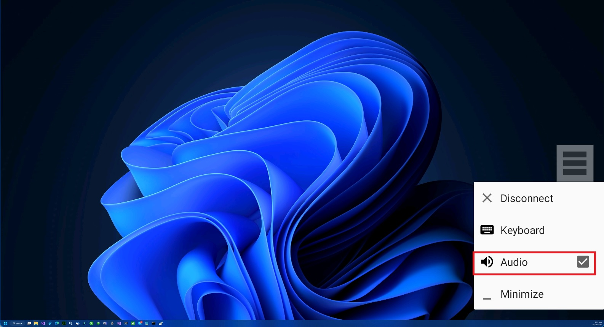

把旧平板嵌进我的生产力链：一套spacedesk驱动的桌面-移动双端工作流
主力机在工位、平板随身带，中间靠spacedesk打通。从旧流程的折腾到新流程的丝滑，讲清每一环怎么接、哪里容易断。
我每周要做三件事：写技术文档、跑模型训练、给客户出设计稿。三年前这套流程在一台 27 寸台式机上就能走完，现在不行了——训练任务一跑就是三小时占满工位，文档要改又离不开 VS Code，客户微信上的改稿意见得盯着平板回，中间来回搬凳子、切显示器，一天下来体力消耗比脑力还大。
旧流程：三台设备、五个手动切换点
坦白说以前不是没想过把平板用起来。试过 Android 的远程桌面客户端，试过微信传文件再在平板上预览，还试过把训练日志导出到网盘再在浏览器里刷。这些方案单看都能跑，拼起来就像一台没对齐齿轮的机器：
- 远程桌面：RDP 和 ToDesk 都试过，延迟在可接受范围内但笔不支持，PDF 批注得用触屏一笔一笔戳，精度差到想把平板扔了；
- 文件中转：训练日志从主机复制到网盘，平板浏览器打开，改完的稿子再传回主机——每改一次稿少了两次手动复制，但多了两次手动复制，纯粹浪费时间；
- 显示器扩展：台式机只有两个 HDMI 口，第二台显示器接上去后，平板就真的只能当"看视频的东西"了。
真正让我下决心换方案的是上周：训练任务跑着占了主机屏幕，客户催改稿，我拿着平板在工位和沙发之间来回跑了四趟，最后还是在主机前蹲了半小时才把稿子改完。那天晚上我翻了一圈解决方案，最终停在了 spacedesk 上。
新流程：spacedesk 当枢纽，两端一套链
spacedesk 是什么简单说一句——它的官网上把两端分工讲得很清楚，主机端装驱动虚拟出额外显示器，在平板上装查看器把平板变成那块虚拟屏。两端之间走 TCP/IP 局域网，可以是 WiFi 也可以是 USB 线模拟的网络。我现在的工作流长这样：
主机（工位台式机）
├── 主力屏：训练监控 + VS Code
└── spacedesk Driver：虚拟出 1920×1200 副屏
└── USB 直连 ←→ 平板（沙发/阳台）
├── 训练日志实时看
├── 微信/飞书改稿意见（反向输入）
└── 设计稿批注（笔输入）关键的衔接点有三个，每个都解决了旧流程里一个卡壳的环节：
第一环：双端安装与配对。 安装包从官方下载拿，主机端装驱动后会自动在 Windows 里虚拟出显示器，设备管理器里能看到多了一块"spacedesk Graphics Adapter"。平板端装查看器后打开就能扫到局域网里的主机——不需要手动填 IP，同网段自动发现。这一步的麻烦在于防火墙，第一次装完主机端一定要把 Windows Defender 防火墙里的 spacedesk 服务放行，不然平板扫半天扫不到。这也是spacedesk文档里排障的第一项。
第二环：USB 网络共享。 我试过 WiFi 连接，信号好的时候延迟还能接受，但客厅和工位隔了一堵承重墙，WiFi 信号时有时无，训练日志刷着刷着就卡住了。解决办法是用 USB 线把平板连到主机，开启 USB 网络共享——两端都走 USB 模拟的 TCP/IP，相当于把平板的 USB 口变成了一个千兆网卡。链路从"WiFi 经路由器"直接降到"USB 直连"，延迟和稳定性都是质的变化。主机端 Driver Console 里有专门的 USB 通道开关，勾上之后平板查看器会自动优先走 USB 链路。

第三环：反向输入打通。 这是整条链里最容易被忽略的一环。默认情况下平板只是个显示器，触摸能当鼠标用，但虚拟键盘有时候唤不出来，笔也不能当数位笔。原因是加密没开——spacedesk 的远程键盘和数位笔通道有加密前提，主机端 Driver Console 里的密码保护和加密必须开启，平板查看器也得是对应授权版本。开了之后，双指在屏幕上一按就能唤起屏上键盘（比悬浮菜单里点 Keyboard 按钮快得多），手写笔直接在平板上画就能当数位笔用。
实操细节：两个最容易断链的环节
说两个我自己踩过的坑，这两个环节是整条链里最容易出问题的：
画质与流畅度的平衡。 刚装上的时候我把 Quality/Performance 拉到最画质档，结果发现 PDF 批注时笔的响应慢了半拍。spacedesk 的画质档位和流畅度是此消彼长的——画质越高越费带宽，也越吃主机 CPU。调优的思路简单：网络好（USB 直连、主机插网线）就往画质端拉，网络一般就往流畅端拉。我现在平板做批注用中间档 + 自动编码 + 默认帧率，训练日志看实时输出就切到偏性能档 + 硬件编码 + 帧率拉满。编码类型也很关键，硬件编码调用显卡的编码单元，CPU 占用低很多，老显卡或老系统才需要切回软件编码。
音频转发。 副屏拿来看训练视频或者客户发来的演示片时，声音默认从主机音箱出来——主机放在工位，我在沙发上根本听不清楚。spacedesk 的 Audio Speaker 功能能把主机声音改到平板扬声器播放。操作路径是悬浮菜单里勾上 Audio 项。但有个细节：iOS 设备经 USB 直连时音频转发官方标注暂不支持，只有局域网连接支持。我用的安卓平板没问题，但如果你是 iPad 用户，遇到"USB 连着没声音"先换 WiFi 验证一下。

效果与边界：省了多少事，什么时候不划算
这套流程跑了一周，实际数据：
- 每天少了约 15 分钟的文件中转时间：训练日志和设计稿不再需要经网盘或微信来回传，平板直接当主机副屏，改完的内容直接在主机上生效；
- 延迟降到可接受范围：USB 直连 + 硬件编码下，笔的响应延迟基本感觉不到，批注时跟直接在主机上操作没区别；
- 工位利用率提高了：主机主力屏留给训练和 VS Code，平板副屏放日志和微信，两个屏幕同时干活，不再互相抢占。
但这套流程不是万能的，边界也很清晰：
- 不适合 WiFi 隔墙的场景：USB 直连才是稳定性的核心，WiFi 下信号不好时延迟会明显变大，看视频会卡、笔的响应会飘；
- 不适合游戏：spacedesk 的画面压缩是面向文档浏览和一般交互的，不适合高帧率游戏场景，官方也没把游戏当主打；
- 主机端必须是 Windows：macOS 驱动还是 BETA 状态，功能不完整，Linux 目前没有官方支持。
收尾：三条仓库都能拿到
这套工作流里用到的 spacedesk 软件本身是免费的，主机端驱动和平板查看器都能从官网直接下载。我整理了一份中文版的使用文档和配置笔记，放在 GitHub 仓库里作为主版本，Gitee 和 GitCode 各有一份镜像，方便不同网络环境的人拉取。